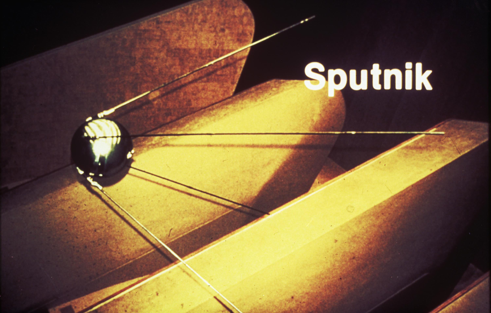
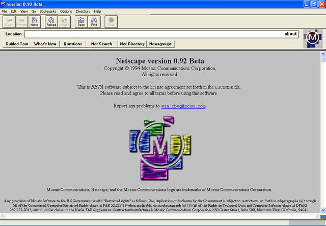

The Internet is something that was made over a long period of time, in a state of constant construction. No single person created it either. It actually started with the government; they had made it as a way to communicate during the Cold War. It turned into a way for scientists to share data with one another anywhere they were in the world. It has evolved into a way for people everywhere to talk to people anywhere! It has become one of the biggest ways for people to be connected.
This entire idea started when the Soviet Union, in 1957, launched a man-made satellite into space to orbit earth. It was called Sputnik. This was the first ever object to get sent up into space to orbit the earth. It was sent up into space for the purpose of transmitting sound for radios. To Americans, this actually sparked up alarm because people have never experienced something in space for the purpose of transmitting data. People that weren’t knowledgeable on the subject were frightened at the possibilities.
After the Soviet Union had sent Sputnik into space, schools started to add harder courses, chemistry, physics, calculus, and more. America really got into a phase where they wanted to focus on the development of various space-related technologies. It was a game changer for the entire world. Because of this phase, people began to be concerned about the power that the Soviet Union had. In 1962, a scientist named J.C.R. Licklider had proposed the idea of a “galactic network”, which is the parent idea to our current world-wide network. Three years after Licklider had proposed his galactic network, another scientist had found a way to send information from one computer to another, “packet switching”. Packet switching is a way for each packet to move and take its own route to get to its destination. For instance, if one part of its route was compromised, then it can find its own way around that error.
The first message to be sent across the first two computers was the word LOGIN. But, it had failed partially, only sending the first two letters. The first two computers were made in UCLA and Stanford. This was just the start of a huge future for the history of computing.
By 1969, there were only four existing computers that were connected to a network. Slowly, there started to be smaller networks that ended up getting combined, becoming large networks. But, all of these networks weren’t quite acting right together, there had to be some kind of way to even everything out. That was when Vinton Cerf had tried to solve this problem. He created a very important part of technology, which is the Transmission Control Protocol, better known as TCP. The addition of Internet Protocol (TCP/IP) came later. It is still used today.) This protocol changed the entire way that technology works.
TCP allowed for the actual communication of networks. Even though TCP was major towards the development of the Internet, Tim Berners-Lee had made the World Wide Web (www) in 1991. This version of the Internet made it easier for people to contact people, this was the Internet that everyone knows and loves today. The first web browser was called Mosaic (early version of Netscape), was made by a group at the University of Illinois in 1992. This web browser has transformed so much since the first versions of the Internet, seen as revolutionary. In 1992, Congress decided to make the World Wide Web a tool for the world. Every company wanted to get on board with this new tool so they can reach as many people as possible. The Internet has blossomed into a huge and magical place, but it still comes with some dangers.